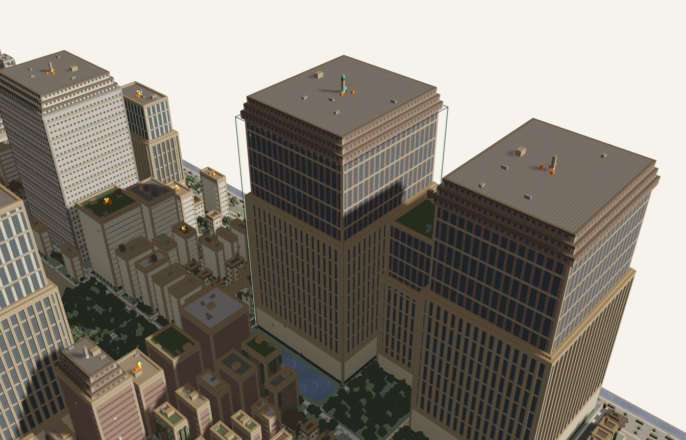

See your repo as a city.
Folders become districts. Files become buildings. Git history leaves its marks. Open the result in your browser, or build it in Minecraft.

- Lines
- 6,581
- Height
- 107 blocks
- Commits, last year
- 42
- TODO markers
- 35
- Last change
- 2026-10-12
- Building
- tower
facebook/react at 098d2e8, rendered with repoville defaults. Commits counted over the last year.
Your repo. One command.
Point it at a folder, owner/repo or a git URL. It writes one HTML file and opens it.
npx --package=https://github.com/maximilianfeix/repoville/releases/latest/download/repoville.tgz repoville . --openNeeds Node.js 22 or newer and git. The package installs from the GitHub release; it is not on npm yet.
A real run on a Mac, October 2026. Output shortened: two of the three ruined buildings and the schematic line are left out.
The buildings are data.
Every building is a file, and everything that happens to it is something git can tell.
Fire means activity. Moss means time since the last change. Neither is a code review.
| A folder | A district with streets, a plaza and a name sign |
|---|---|
| A file | A building. Height grows with the square root of its lines, capped at 250 blocks |
| Commits in the last year | Fire on the roof of the busiest files |
| TODO, FIXME, HACK | Cracked walls |
| No commit for a year | Moss and vines |
| The language | The district's materials |
Large repositories fold whole folders into one tower, so the city stays small enough to open. All nine building types.
Try another repository.
Each of these is the file repoville wrote, unchanged. Open one and click any building.
 facebook/reactOpen the city →
facebook/reactOpen the city →


One HTML file. Or actual blocks.
The viewer is a single file you can send to someone. The same city exports as blocks for a Minecraft Java world.
.htmlThe 3D viewer: search, building cards, history and churn views, night mode, photo export.schemSponge schematic for WorldEdit.litematicFor LitematicaworldA world folder to open in singleplayer--liveBuilds into a running server over RCON
Checked on Paper 1.21.11 with WorldEdit 7.3.19: one block of every type in the test city survives a paste, a world load and a live build. How to load it.
The analysis runs on your machine.
No upload
Files and git history are read locally. Remote repositories are cloned with your own git.
Two optional requests
The viewer loads web fonts when you are online, and fetches original block textures only if you switch them on.
Mind what you share
The HTML file contains file paths, line counts and commit counts. Share it like you would share the file listing.